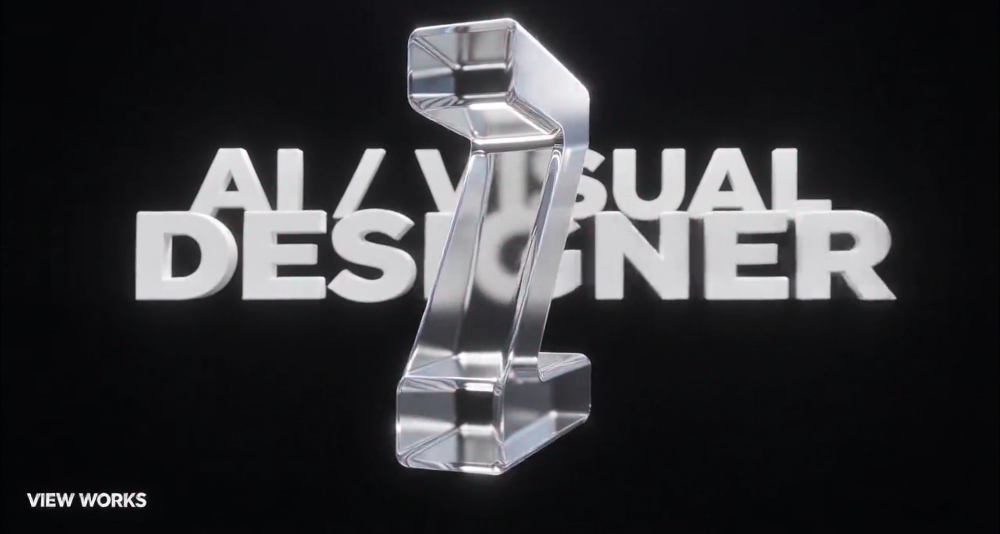

诸暨袜业定制平台
牵头搭建数字化视觉生产线与一站式网页服务平台，衔接 AI 袜子图案生成、工业点针图纸转换、素材管理和在线出图运营。

VIEW WORKSZHU YUYU / PORTFOLIO 2026SELECTED WORKS / 2026
电商视觉、影视与角色创作
以及品牌设计的更多可能
A CLOSER LOOK
关注人物、服装与环境的关系，
让 AI 素材进入具体的视觉应用。
我是朱雨雨，一名关注 AI 视觉应用的设计师，目前在杭州从事技术美术工作。
美术学本科出身，具备素描、色彩与手绘修图基础。工作覆盖电商图像、影视人物与场景，以及 AI 视频视觉素材。也使用 Python 为批量出图与文件导出搭建自动化工具。
技术美术。AIGC 图文与视频视觉制作，电商图像解决方案与自动化工具。
原画师。AI 角色原画、手绘修改、三视图与场景制作，配合 3D 美术工作。
全职美术老师。美术鉴赏及素描、色彩、速写教学。
太原师范 · 本科 · 美术学专业
高中教师资格证
TOOLS & WORKFLOW
视觉生产，也可以更有序。
牵头搭建数字化视觉生产线与一站式网页服务平台，衔接 AI 袜子图案生成、工业点针图纸转换、素材管理和在线出图运营。
通过 Vibe Coding 搭建自动化脚本，支持素材批量生成、风格统一校准与文件批量导出。
项目职责依据简历整理，实际平台界面与工具过程素材待补充。
LET'S CONNECT
一起做出更好的画面